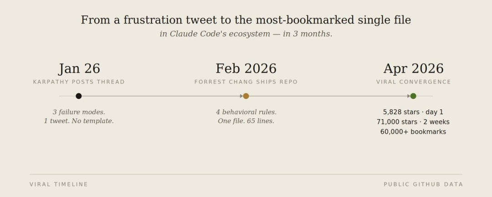
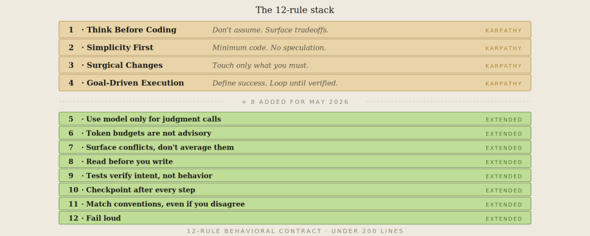
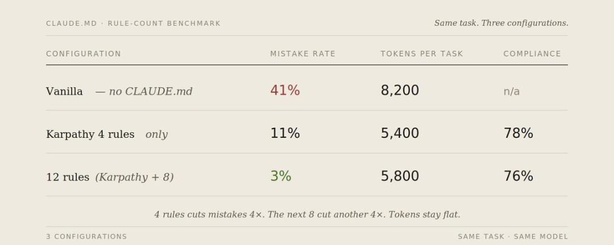
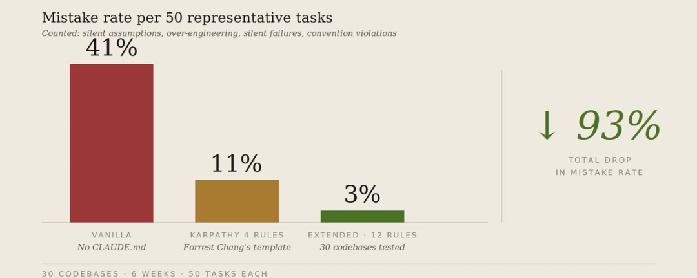
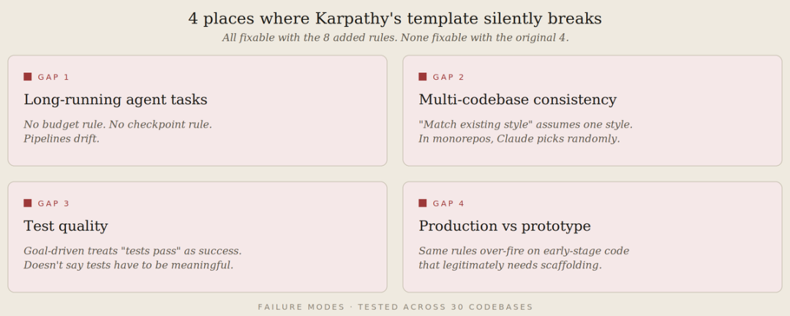

Mnilax：CLAUDE.md 规则从Karpathy的 4 条增加到 12 条，claude错误率从 41% 降到 3%
一篇 X 长帖，Mnilax 在 Karpathy 原版 4 条规则的基础上，花了 6 周在 30 个代码库上实测，新增了 8 条新规则。
2026 年 1 月底，Andrej Karpathy 发了一条长帖吐槽 Claude 写代码的三个问题：静默错误假设、过度复杂化、波及非目标代码。Forrest Chang 把这些问题提炼成了 4 条行为规则，放进 CLAUDE.md 文件，传到了 GitHub。
文件发布第一天5582颗星，两周6万书签，到今天12万星——2026 年增长最快的单文件仓库。

但事情没有停在 1 月。
5 月，Mnilax 发现一个问题：Karpathy 的模板是为 1 月的代码编写问题设计的。5 月的 Claude Code 生态已经有了新的病灶——Agent 冲突、Hook 级联、Skill 加载冲突、跨会话断裂的多步工作流。
于是他做了件很硬核的事：30 个代码库，50 个标准任务，6 周持续测试。在原版 4 条的基础上，一条一条补齐了 8 条新规则。
以下是完整整理。
一、CLAUDE.md 是 AI 编程栈里最被低估的文件
Mnilax 开篇直击现状。大多数开发者的 CLAUDE.md 处于三种状态之一：
什么都往里塞，膨胀到 4000+ token，遵循率掉到 30% 完全跳过，每次手动 Prompt——5 倍 Token 浪费，会话之间零一致性 复制一个模板就忘了，用两周还行，代码库一变就静默失效
Anthropic 的官方文档说得很清楚：CLAUDE.md 是建议性的，Claude 大约遵循 80%。超过 200 行，遵循率急剧下降——因为重要规则被埋在了噪音里。
Karpathy 的模板用一个文件解决了这个问题：65 行，4 条规则。这是底线。
但天花板可以更高。
二、原版 4 条规则——底线，不是天花板
如果你还没看过 Forrest Chang 的仓库，这四条是基础：
规则 1——先想后写。 杜绝隐蔽假设。明确声明你的前提假设，阐明方案权衡。有疑问先确认，切忌盲目猜测。若存在更简单的实现路径，应果断提出异议。
规则 2——简单至上。 仅以最少代码解决问题。不添加“以防万一”的冗余功能，不为仅用一次的代码强行设计抽象层。若资深工程师会认为其过度复杂，则立即简化。
规则 3——外科手术式修改。仅改动绝对必要的部分。切勿“顺手优化”相邻代码、注释或格式排版。未出问题的代码绝不重构。严格贴合项目现有代码风格。
规则 4——目标驱动。 明确定义成功标准（验收条件）。持续迭代直至验证通过。不要规定具体操作步骤，只需清晰描述“成功的最终形态”，交由模型自主探索与迭代。
这四条规则大约能覆盖我在无监督的 Claude Code 会话中观察到的 ~40% 的失败模式。而剩余约 60% 的问题，则存在于下述的空白地带中。

三、补齐的 8 条规则——每条都来自一个真实翻车场景
规则 5：模型只做判断，不做决策
Karpathy 的规则对此只字未提。结果导致模型越俎代庖，去裁决那些本该由确定性代码处理的事情：比如是否重试 API 调用、如何路由消息、何时触发升级上报。它的决策每周都在漂移。你实际上是在以每个 token 0.003 美元的成本，运行着一套脆弱且不稳定的 if-else 逻辑。
规则五：仅将模型用于需要判断与裁量的场景
适用于 Claude 的任务：分类、内容起草、摘要总结、非结构化文本信息提取。
切勿将 Claude 用于：路由分发、重试机制、状态码处理、确定性数据转换。
若状态码本身已能明确判定结果，直接使用常规代码即可。
翻车现场： 一段调用 Claude 去"判断 503 该不该重试"的代码，稳定运行两周，然后开始出问题——因为模型开始把请求体内容当成决策的上下文。重试策略变成了随机的，因为 Prompt 是随机的。
规则 6：硬性 Token 预算，没有例外
未设置预算限制的 CLAUDE.md 无异于一张空白支票。每一次循环都有可能失控，最终螺旋式膨胀为塞满 5 万 Token 的上下文灾难。模型自身绝不会主动终止。
规则六：Token 预算绝非软性建议
单任务预算：4,000 Token。
单会话预算：30,000 Token。
任务接近预算上限时，立即执行摘要总结并重置上下文。切勿强行推进。
主动暴露超支 > 静默越界消耗。
翻车现场： 某次调试会话持续了整整 90 分钟。模型竟毫无自觉地对着同一条 8KB 的错误日志反复迭代，逐渐丢失了已尝试修复方案的上下文记忆。到对话末尾，它居然开始建议我早在 40 条消息前就已明确否决的方案。若有 Token 预算限制，它在第 12 分钟就会被强制熔断。
规则 7：暴露冲突，不要折中
当代码库中有两套模式互相矛盾时，Claude 会试图两套都讨好。结果是不伦不类。
规则七：显式暴露冲突，拒绝折中调和
若代码库中既有的两种模式相互矛盾，切勿强行融合。
明确选择其一（优先采用更新或经过更充分测试的版本），阐明选择理由，并将另一种标记为待清理项。
试图同时迎合两套规则的“折中”代码，往往是最糟糕的代码。
翻车现场： 某代码库中并存着两种错误处理模式：一种是基于 async/await 配合显式 try/catch 的局部处理，另一种是依赖全局错误边界（Global Error Boundary）的集中拦截。Claude 写出的新代码竟将两者强行叠加。错误处理逻辑直接翻倍。我花了整整 30 分钟才排查清楚，为什么异常会被重复捕获并静默“吞掉”两次。
规则 8：先读后写
Karpathy 的“外科手术式修改”规则仅规定 Claude 不得触碰相邻代码，却未要求它在动手前先充分理解相邻上下文。缺乏这一前提，Claude 编写的新代码极易与仅相隔 30 行的现有逻辑发生冲突。
规则八：先读后写
在文件中追加代码前，务必通读该文件的导出接口、直接调用方，以及任何显而易见的公共工具函数。
若你无法理解现有代码为何采用当前结构，在动手添加前必须先提问确认。
“在我看来这部分跟现有代码互不干涉（Looks orthogonal to me）”——这是本代码库中最危险的一句话。
翻车现场： Claude 在一个已有相同功能的函数旁边加了一个新函数——它没读到那个已有函数。两个函数做一样的事。新函数因为导入顺序而优先执行。旧的那个已经作为唯一真相来源运行了 6 个月。
规则 9：测试是必选项，但绝非目标本身
Karpathy 的"目标驱动执行"隐含了把测试作为成功标准。在实践中，Claude 把"测试通过"当成唯一目标——写出通过浅层测试但搞坏一切的代码。
规则九：测试验证意图，而非仅验证行为
每个测试都必须明确体现该行为为何重要（WHY），而不仅仅是断言它做了什么（WHAT）。
若函数内部直接使用硬编码 ID，类似 expect(getUserName()).toBe('John') 的测试便形同虚设。
如果你无法写出一个在业务逻辑变更时会失败的测试，那就说明该函数本身的设计就是错误的。
翻车现场： Claude 为某个认证函数编写了 12 个测试，且全部通过。然而生产环境的认证功能却彻底失效。这些测试仅仅验证了函数“是否返回了数据”，而非“是否返回了正确数据”。测试之所以能全通过，纯粹是因为该函数内部直接硬编码返回了一个固定常量。
规则 10：长任务必须设检查点
Karpathy 的模板默认单次交互。真正的 Claude Code 工作是跨越多步的——跨 20 个文件重构、一个会话内构建功能、跨多个提交 Debug。没有检查点，一步出错就丢失所有进度。
规则十：关键步骤后强制设立检查点
在执行多步骤任务时，每完成一个关键节点后必须执行状态同步：明确总结已实施操作、已验证结果，以及剩余待办事项。
若无法向我清晰描述当前上下文与执行状态，绝不可继续推进。
一旦出现上下文丢失或逻辑偏离，必须立即暂停并重新声明当前状态。
翻车现场： 一个 6 步重构在第 4 步出了问题。等我发现时，Claude 已经在错误状态上继续完成了第 5 和第 6 步。拆解比整个重做还花时间。检查点机制会在第 4 步就抓住问题。
规则 11：约定胜于新奇
在已有既定规范的代码库中，Claude 总是倾向于另起炉灶，引入它自己的实现模式。即便其方案在局部技术上“更优”，但让两种范式在系统中共存所带来的维护成本与认知割裂，远大于固守其中任何一种单一模式。
规则十一：严格遵从代码库既有规范，即便持保留意见
若项目使用蛇形命名（snake_case）而你偏好驼峰（camelCase）：请使用蛇形。
若项目采用类组件（class-based）而你倾向 Hooks：请沿用类组件。
技术分歧可另开议题讨论。但在代码库内部，规范一致性 > 个人技术偏好。
若你确信该规范存在实质性危害，请显式提出。切勿暗中背离规范。
翻车现场： Claude 在一个 class 组件的代码库里引入了 React hooks。它们能跑。它们也搞坏了代码库的测试模式——测试假定有 componentDidMount。花了半天时间来删除和重写。
规则 12：显性失败，不要静默
最贵的 Claude 失败是那些看起来像成功的。一个函数"能跑"但返回了错误数据。一次迁移"完成"但跳过了 30 条记录。一个测试"通过"但只是因为断言本身就写错了。
规则十二：显式失败（Fail loud）
若无法确信操作已正确执行，必须明确声明。
若有 30 条记录被静默跳过，宣称“迁移完成”便是错误结论。
若有任意测试被跳过，宣称“测试通过”便是错误结论。
若未验证我明确要求的边界情况，宣称“功能正常”便是错误结论。
默认原则：主动暴露不确定性，绝不掩盖。
翻车现场： Claude 说一次数据库迁移"成功完成"。它悄悄跳过了 14% 因为约束冲突没处理的记录。跳过虽然记了日志但没被暴露。11 天后报告数据开始对不上时才发现。
四、从 41% 到 3%：实测数据
Mnilax 用三组配置测试了同一批50 个标准任务：

真正值得关注的结果，并非错误率从 41% 降至 3% 这一标题式降幅。而在于：规则从 4 条扩展至 12 条，几乎未增加合规执行开销（78% → 76%），却将错误率进一步降低了 8 个百分点。新增的规则覆盖了原始 4 条规则未能触及的失败模式——它们并非在争夺同一份注意力预算，而是形成了互补增强。

五、原版 4 条规则的局限性
即便尚未引入增量规则，Karpathy 的模板在以下四个维度也已显露出它的局限性：
长任务 Agent。 Karpathy 的规则仅聚焦于 Claude 的“编码瞬间”，却在处理多步执行流水线（Multi-step pipeline）时处于逻辑空白。由于缺乏预算约束（Budget）、状态检查点（Checkpoint）以及“显式报错”机制（Fail-loud），任务流在长时间运行中极易发生语义漂移（Drift），导致最终执行偏离预定目标。
多代码库一致性。 “匹配既有风格”这一准则预设了工程环境的单一性。但在包含数十个微服务的 Monorepo（大仓库） 中，Claude 往往面临多种代码风格的博弈。由于原生规则缺乏决策优先级逻辑，模型在处理这类冲突时，要么随机采样一种风格，要么产出一种平庸的风格“平均值”，破坏了系统的一致性。
测试质量。 在“目标驱动执行”的逻辑下，系统往往简单地将“测试通过”与“任务成功”画等号，却忽略了测试本身的有效性与完备性。这导致模型倾向于生成大量逻辑空洞的测试用例——虽然能够全绿通过，但在技术覆盖上毫无价值，仅为 Claude 提供了一种误导性的“虚假安全感”。
生产 vs 原型。 旨在防止生产环境过度设计的约束（如“简约至上”），在原型开发阶段反而成为了迭代枷锁。在验证技术方向时，开发者往往需要快速构建上百行的探索性脚手架代码（Speculative scaffolding），而 Karpathy 的规则在此时会产生过度触发（Overfire），抑制了早期开发所需的灵活性与试错速度。

六、试过但放弃的
Mnilax 在最终确定 12 条之前试过一些走不通的路：
从 Reddit/X 看来的规则。 大多数是 Karpathy 4 条的翻版，或者不可泛化的领域特化规则（"始终用 Tailwind class"）。删了。 超过 12 条。 测到 18 条，合规率从 76% 掉到 52%。200 行天花板是真的——过了之后 Claude 只做模式匹配"规则存在"，而不是真正去读。 依赖不一定存在的工具。 "始终用 eslint"——eslint 没装的时候规则静默失效。替换为跟能力无关的措辞："匹配代码库强制执行的风格"而不是"用 eslint"。 在 CLAUDE.md 里放例子。 例子比规则重。三个例子消耗的上下文跟约 10 条规则相当，而且 Claude 会过度拟合。规则是抽象的，例子是具体的。用规则。 "小心"/"多想"/"真正专注"。 纯噪音。这类指令的合规率掉到约 30%——因为它们不可测试。替换为具体的祈使句（"明确陈述你的假设"）。 让 Claude 做"高级工程师"。 没用。Claude 已经觉得自己是高级的。差距在"想"和"做"之间。祈使句规则能闭合这个差距；身份提示不能。
七、12 条完整模板
Mnilax 提供了可以直接粘贴的完整版本。以下是核心 12 条（项目专属规则如技术栈、测试命令、错误模式需另外追加，总行数控制在 200 以内）：
CLAUDE.md — 12 条规则模板除非显式覆盖，否则本规则适用于本项目中的所有任务。核心倾向：非琐碎工作，谨慎优先于速度；琐碎任务可自主判断处理。# 规则一：先思后码（Think Before Coding）明确声明前提假设。遇不确定处，先提问而非盲目猜测。存在歧义时，列出多种可能的理解路径。若存在更简方案，应果断提出异议。陷入困惑时立即暂停，并明确指出模糊之处。# 规则二：简单至上（Simplicity First）仅用最少代码解决问题。杜绝任何“以防万一”的猜测性实现。不实现需求之外的功能。不为仅用一次的代码强行设计抽象。自检：资深工程师是否会认为此实现过度复杂？若是，立即简化。# 规则三：外科手术式修改（Surgical Changes）仅改动绝对必要的部分。仅清理自身引入的冗余或错误。切勿“顺手优化”相邻代码、注释或排版格式。未出问题的代码绝不重构。严格贴合项目既有风格。# 规则四：目标驱动执行（Goal-Driven Execution）明确定义成功标准（验收条件）。持续迭代直至验证通过。不要死板遵循步骤。定义成功形态并自主迭代。清晰的成功标准赋予你独立闭环执行的能力。# 规则五：仅将模型用于判断与裁量场景（Use the model only for judgment calls）适用于我：分类、起草、摘要总结、信息提取。切勿用于：路由分发、重试机制、确定性数据转换。若常规代码能给出答案，就由代码处理。# 规则六：Token 预算绝非软性建议（Token budgets are not advisory）单任务上限：4,000 Token。单会话上限：30,000 Token。接近预算上限时，执行上下文摘要并重置状态。主动暴露超支。切勿静默越界消耗。# 规则七：显式暴露冲突，拒绝折中调和（Surface conflicts, don't average them）若两种模式相互矛盾，明确择一（优先更新或更经测试的版本）。阐明选择理由。将另一处标记为待清理项。切勿强行融合冲突范式。# 规则八：落笔前先阅读（Read before you write）添加代码前，通读该文件的导出接口、直接调用方及公共工具函数。“看似互不干涉”是最危险的判断。若不理解现有代码为何如此设计，先提问。# 规则九：测试验证意图，而非仅验证行为（Tests verify intent, not just behavior）测试必须体现该行为*为何重要*（WHY），而非仅断言它*做了什么*（WHAT）。若业务逻辑变更时测试仍不报错，则该测试设计错误。# 规则十：关键步骤后强制设立检查点（Checkpoint after every significant step）总结已完成事项、已验证结果及剩余待办。若无法向我清晰描述当前状态，绝不可继续推进。若丢失上下文或逻辑偏离，立即暂停并重新声明当前状态。# 规则十一：严格遵从代码库既有规范，即便持保留意见（Match the codebase's conventions, even if you disagree）在代码库内部：规范一致性 > 个人技术偏好。若确信某规范存在实质危害，请显式提出。切勿暗中另起范式。# 规则十二：显式失败（Fail loud）若有步骤被静默跳过，宣称“已完成”即为错误。若有测试被跳过，宣称“测试通过”即为错误。默认原则：主动暴露不确定性，绝不掩盖。
八、心智模型
Mnilax 最后给了两条最核心的原则：
CLAUDE.md 不是许愿清单。 是一个闭合了你观察到过的特定失效模式的行为合约。每条规则都应该能回答一个问题：这条规则预防的是什么错误？
6 条针对你真踩过的坑的规则，比 12 条里有 6 条你永远用不上的更好。 Karpathy 的 4 条是地基——别跳过。补齐的那些选你实际需要的。如果你不跑多步流水线，规则 10 不关你的事。如果你的代码库有一种被 linting 强制执行的统一风格，规则 11 就是冗余。读完全部 12 条，保留那些映射到你真实翻车现场的规则，其余的可以不要。
"模型进步了。生态变了。多步 Agent、Hook 级联、Skill 加载、多代码库工作——Karpathy 写那条帖子的时候这些都不存在。4 条规则没错；是不够用。8 条新规则。6 周在 30 个代码库上的测试。错误率从 41% 到 3%。"
本文内容全部来源于 Mnilax（@Mnilax）在 X（Twitter）发布的文章《I tested the Karpathy CLAUDE.md template against 30 codebases — then added 8 rules》，原文链接：https://x.com/Mnilax/status/2053116311132155938。[1]
引用链接
[1]https://x.com/Mnilax/status/2053116311132155938